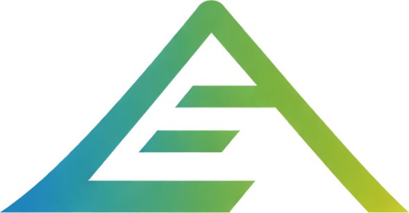

01/Signal
Buying the best AI model isn’t enough. It needs to know how your business works.
Most teams already have AI. Few have the through line that makes it actually work.
Mumbai, India
[Let'stalk]02/Selected Work
2022–2026
Selected work, shaped as systems.
Hey, I'm Chay. I turn your team's scattered AI tools and workflows into a system that actually knows your startup and runs without hand-holding.

Everis Hiring + context AI-assisted hiring flows and tests built on Testlify, with one shared source of truth so hiring runs on AI without re-explaining the company. Peoplebox.ai AI data & workflow ops
Led a 5-engineer team on the human-review layer behind an AI product: annotation, QA, and review loops that turned messy requirements into repeatable rules.
AI data & workflow ops
Led a 5-engineer team on the human-review layer behind an AI product: annotation, QA, and review loops that turned messy requirements into repeatable rules.
 Ticombo
Content + AI
Ran website and Instagram content with AI built into the production pipeline, my first real go at making AI useful inside a live marketing team.
Ticombo
Content + AI
Ran website and Instagram content with AI built into the production pipeline, my first real go at making AI useful inside a live marketing team.
03/Practice
In focus 01 / 05
The model is the easy part. The system is the job.
I build both: the AI that does the work, and the system that makes its output safe to ship.
- Find the leakI pick one workflow that eats time or keeps getting redone, and find where it actually breaks. Context break
- Redesign itI map what should happen: the steps, the inputs, what AI handles, what a human decides. Workflow logic
- Build it with what you haveI build into the tools the team already uses, so there is no new platform to adopt. Existing stack
- Keep a human in the loopAI drafts and prepares. A person approves anything that matters, and rejections become feedback. Review gate
- Hand it offThe team keeps the workflow, the rules, and the docs to run it without me. Operating system
04/The through line
One continuous line, from context to execution.
Buying the model is the easy part. Every startup runs on the same one now. What you can't buy is the line that runs from what your company already knows to what its AI actually does with it. That's where adoption really lives: context going in, judgment in the middle, work you can trust coming out. It isn't another subscription. It's one line, drawn through a single workflow, then the next, then the next.
That's the through line. It holds from context 2 execution, and stays intact after I hand it off.
Execution05/Contact
Got a workflow that's more manual than it should be?
[Let'stalk]
or write directly build@beingchay.com